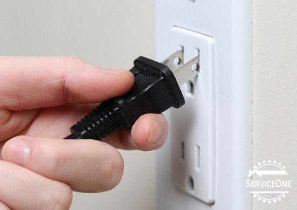

Ways on how you can prevent fires
|  | Unplug unused appliances Not only will unplugging unused appliacnes save you energy and money, it might also save your life! Fires caused by electrical ports are one of the top 5 most common causes of house fires, so unplugging your unused appliances will help prevent a house fire. |
 |
Turn off stove/kitchen appliances While cooking, fire will of course be involved. In order to prevent a kitchen fire from starting, you must not leave the stove on as leaving it can and will cause the fire to get out of control. If you really have to leave you must turn the stove off. |
 |
Check smoke alarms Smoke alarms are key in detect fires before they get out of control, therefore having one is important. Make sure to regularly check the batteries and if needed, replace the alarm so you wont become a victim of a house fire. |
 |
Keep Flammable objects away from heat Sparks from places like fireplaces may cause objects like carpets, xmas trees, etc to either ignite or Spontneously combust. Keep these kinds of objects away from places with heat to prevent house fires from starting. |